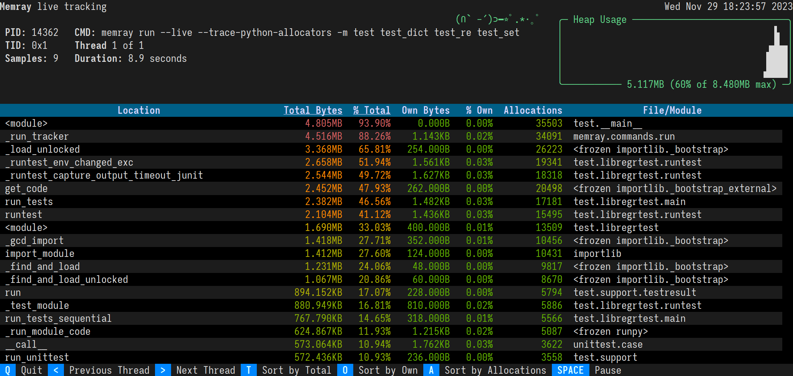
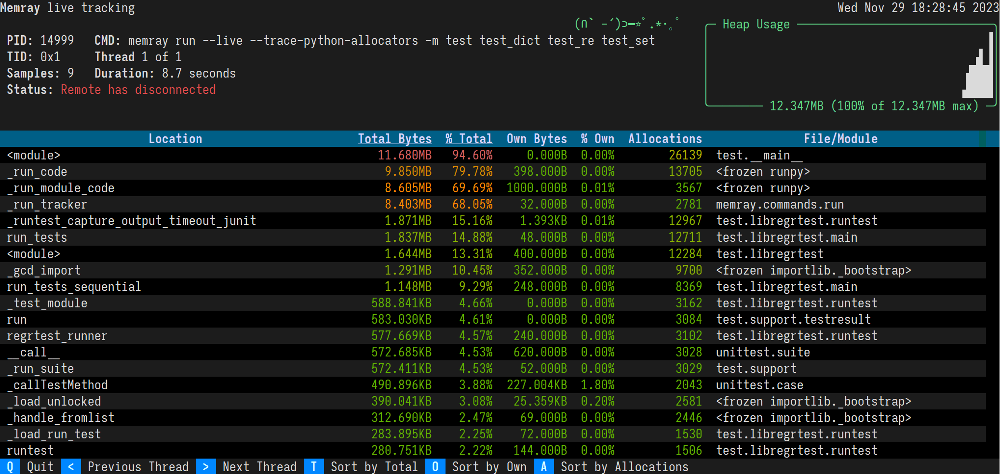

Live Reporting¶
Overview¶
Memray supports presenting a “live” view for observing the heap memory usage of a running Python program. This provides insight into how memory is allocated as the program executes.
It is especially helpful for investigating the behavior of a program that has different allocation patterns during different stages of the program’s execution. It lets you see what the peak heap usage has been and how much memory is being allocated by various parts of the program. The information is presented in a tabular format, showing how much of the in-use memory each function directly allocated (“own memory”), how much was cumulatively allocated by that function and everything it called (“total memory”), and the cumulative count of not yet freed allocations performed by that function and everything it called (“allocation count”).
Usage¶
To use live mode, you can specify the program to be profiled in live mode using run --live:
$ memray run --live application.py
Immediately Memray will start your process in the background and will connect a TUI to it in the foreground. The TUI will display the current high watermark of the heap every time it takes a snapshot, in a tabular format.
This view presents the following information:
What the PID is of the running process.
What command was used to invoke the program.
The current heap size and the peak heap size seen so far.
How long the program has been running.
How many snapshots of the memory (referred to as samples) have been presented.
A plot of the heap size over time.
Once the program has exited, there will be a message presented in the live view, stating that “Remote has disconnected”.
Sorting results¶
The results are displayed in descending order of total memory allocated by a function and the subfunctions called by it. You can change the ordering with the following keyboard shortcuts:
t (default): Sort by total memory
o: Sort by own memory
a: Sort by allocation count
In most terminals you can also click the “Sort by Total”, “Sort by Own”, and “Sort by Allocations” buttons on the footer.
The sorted column’s heading is underlined.
Viewing different threads¶
By default, the live command will present allocations from all of the program’s threads. You can look at individual
threads of the program by first pressing m (to disable thread merging), and then pressing the greater than and less
than keys, < and >, to switch between threads. In most terminals you can also click the “Unmerge Threads”,
“Previous Thread”, and “Next Thread” buttons on the footer.
Using with native tracking¶
It is possible to use Native tracking along with the live mode. This can be achieved by passing --native
to the run command.
$ memray run --live --native application.py
Remote mode¶
Remote mode allows you to run the program to be traced in one process and the tui in another. To use remote mode, you can
specify the program to be profiled in live mode using run --live-remote:
$ memray run --live-remote application.py
Run 'memray live <port>' in another shell to see live results
As you can see, Memray is now waiting on a connection to the live tracking server. You can now attach to
the server using running the live command in a separate shell.
$ # Run this in a different shell:
$ memray live <port>
This command will connect to the server that was started in the previous command, when given the requested port number. Once the connection is established, the program will start executing. All memory allocations and deallocations throughout the program will be tracked.
The program being tracked will present its output on the shell running the run --live-remote command. In the shell running
the live command, information about the program will be presented with the regular TUI of live mode.
Using a different port¶
It is possible to make run --live-remote start the server on a user-specified port, using the --live-port argument.
$ memray run --live-remote --live-port 12345 application.py
Run 'memray live 12345' in another shell to see live results
Important
Due to the syntax of the command line arguments of memray, make sure that you pass any options intended for the
run command before your script/module. Otherwise, they will be treated as arguments for the script and will not
be used by Memray.
For example, the following invocation will pass --live-port 12345 to application.py,
instead of having it be used by memray run:
$ memray run --live-remote application.py --live-port 12345
Run 'memray live 60125' in another shell to see live results